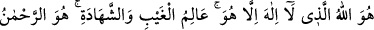
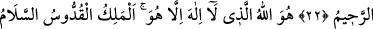
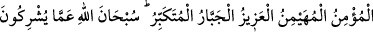
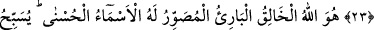
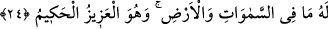

EN GÜZEL İSİMLER
O’NUNDUR
22. O, öyle Allah’tır ki, O’ndan başka tanrı yoktur. Görülmeyeni ve görüleni
bilendir. O, esirgeyendir, bağışlayandır.
23. O, öyle Allah’tır ki, kendisinden başka hiçbir tanrı yoktur. O, mülkün
sâhibidir, eksiklikten münezzehtir, selâmet verendir, emniyete kavuşturandır,
gözetip koruyandır, üstündür, istediğini zorla yaptıran, büyüklükte eşi olmayandır.
Allah, müşriklerin ortak koştukları şeylerden münezzehtir.
24. O, yaratan, var eden, şekil veren Allah’tır. En güzel isimler O’nundur.
Göklerde ve yerde olanlar O’nun şânını yüceltmektedirler. O galiptir, hikmet
sâhibidir.
“O, öyle Allah’tır ki, O’ndan başka tanrı yoktur. Görülmeyeni ve görüleni bilendir.
O, esirgeyendir, bağışlayandır.” Hüve zamiri aslında gâib, tekil erkek için ve onun
yerine kullanılmak üzere konmuştur. Hiye zamiri de gaibe müennes tekili için konmuştur.
Çoğunlukla bu hüve zamiri bu âyette de olduğu gibi erkeklik ve dişilik düşünülmeyen
yerlerde kullanılır. Alem olduğu için burada Cenab-ı Hakk’a râcidir. Hakikaten ve
hükmen müenneslik olmayan bir müfred için konulmuştur, denilebilir. Hiye zamiri
kendisinde müenneslik ve müzekkerlik nitelikleri bulunan müfred içindir. Buradaki hüve
zamiri mübtedâ olup haberi, hakkıyla O, mâ’bûd, zâtın celalini ve kemal sıfatlarını
gösteren bu ism-i âzam ismiyle isimlenen Allah lafzıdır. Bu sebeple “Allah, Allah’tır”
takdirinde olduğu için mübtedâ ile haberin bir olması gerekmez. Bunlar, bir sayılsaydı
mübtedâ ile haberin bir mânâsı olmazdı. Yahut Allah ismi hüve zamirinden bedel, ism-i
mevsûl sılasiyle birlikte mübtedânın haberidir. Ya da hüve zamiri şan zamiri, Allah
lafzı mübtedâ, “O ki, O’ndan başka tanrı yoktur” cümlesi haberdir. Cümle olarak şan
zamirinin haberidir. Lâ harfi tevhid kelimesinde cinsin fertlerini genel ve kapsamlı
olarak nefyetmek içindir. İlah kelimesi ise fetha üzere mebnî, mahallen merfû
mübtedâdır. İlah ile gerçek mânâdaki mâbûdun cinsi kasdedilmiş olup mutlak mânâda